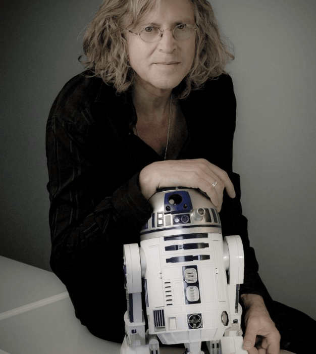
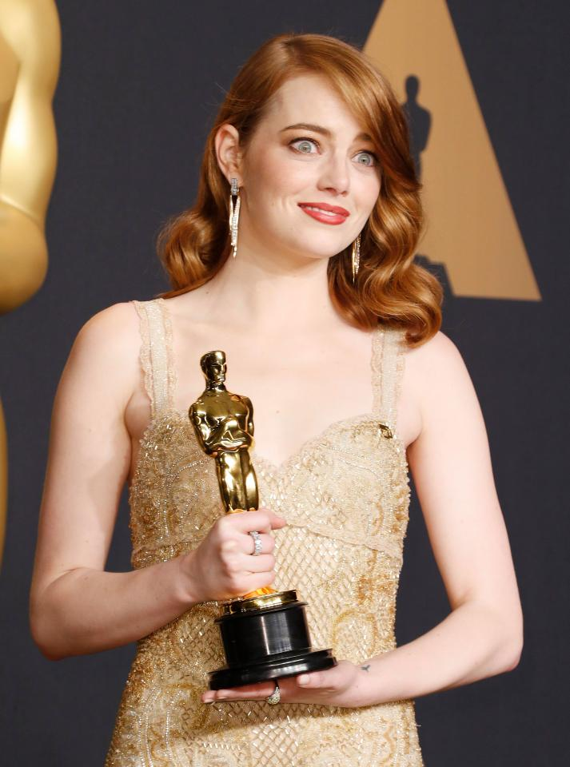
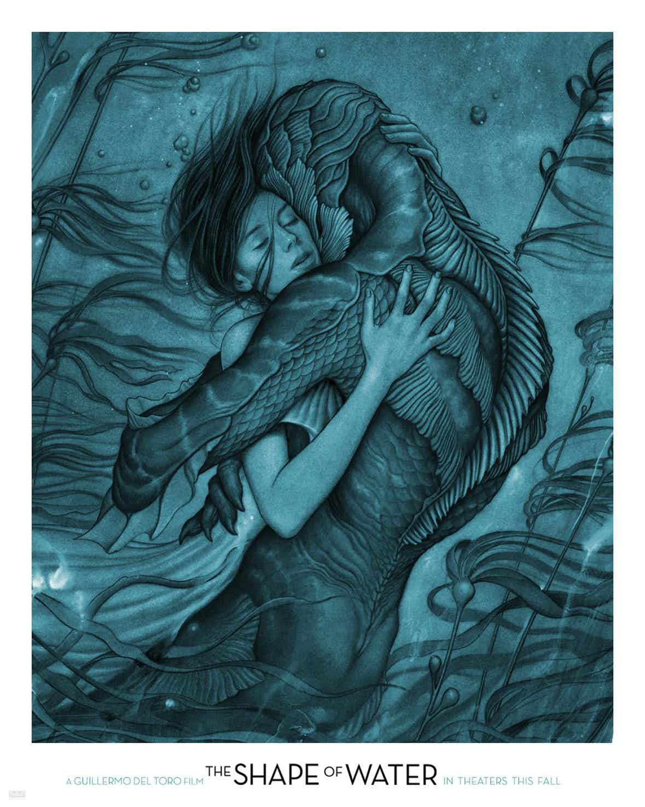

Интервью с художником-постановщиком «Звездных войн» Роджером Кристианом
Художник-постановщик «Звездных войн» Роджер Кристиан создал и легендарный «Тысячелетний сокол», и всеми любимый дизайн световых мечей. В интервью КиноПоиску Кристиан не только поделился своими мыслями о продолжении саги Джорджа Лукаса, но и рассказал о том, как протекала работа над первыми частями культовой франшизы.
Читать краткую версию статьи на Cinema Store
Читать полную статью на КиноПоиске
Мне кажется, они неплохо выступили. В «Пробуждении силы» Джей Джей Абрамс дал фанатам то, чего они так хотели — оригинальные «Звездные войны», облаченные в новые одежды и помещенные в новую среду. Он создал гигантский развлекательный аттракцион, но при этом очень трепетно отнесся ко всем идеям, которые Джордж заложил в эту вселенную. Многим также понравился «Изгой-один», но для меня это больше классический военный экшен. Уверен, что в итоге эпизоды основной франшизы — «Пробуждение силы» и еще не вышедшие «Последние джедаи» — будут, так сказать, долгоиграющими хитами среди поклонников франшизы.


Оскар 2018: стоит ли рассчитывать на необычных претендентов?
Церемония Оскар не загорами. Букмекеры уже начали принимать ставки, а звездные стилисты готовить наряды к главной красной дорожке года. Но стоит ли ожидать чего-то нового от премии, рейтинги которой падают все ниже с каждым годом? Cinema Store попытался разобраться.
Читать полную статью на Cinema Store
Интерес к премии Оскар падает с каждым годом. «Выигрывают всегда одни и те же», «победу определяют уровнем популярности», – звучат гневные комментарии зрителей в Твиттере. Однако премия 2018 года имеет все шансы изменить этот тренд.
В главных ролях: Элизабет Мосс и её лучшие фильмы
Когда-то она была «той второстепенной героиней» в сериале «Безумцы», а сейчас — одновременно покоряет малые и большие экраны. Элизабет Мосс с легкостью снимается и в успешном «Рассказе служанки», и в неоднозначной, но громкой картине «Квадрат».
Читать полную статью на Wonderzine
В прокат выходит «Квадрат» — сатира о мире современного искусства и привилегий, снятая скандинавским режиссёром Рубеном Эстлундом. Главную роль в фильме сыграла одна из самых сильных и нетипичных актрис поколения, американка Элизабет Мосс. Её героиня вступает в отношения с музейным куратором с противоречивыми целями и странным результатом. Вспоминаем лучшие роли Мосс в независимом кино и объясняем, почему к ней оказались прикованы взгляды миллионов зрителей.

Venice 2017: «Форма воды»
Новый фильм Гильермо дель Торо собрал немало хвалебных рецензий и уже значится в списках самых ожидаемых картин года. В чем секрет новой «страшной сказки» от маэстро рассказывает Мария Ремига.
Читать полную рецензию на Cinemaholics
60-е, Балтимор. Немая женщина по имени Элиза работает уборщицей на секретном военно-исследовательском объекте, а в свободное время пытается как-то побороть свое одиночество. Она водит дружбу с приятной коллегой, геем-иллюстратором-неудачником, но все это, конечно, не совсем то. «То» появляется в ее жизни, когда военные привозят на объект невозможно красивое чудовище, которое как и Элиза не может говорить, зато прекрасно умеет слушать.
Кликни по мне!
Покажи мне еще один алерт!
Наш третий элемент для события